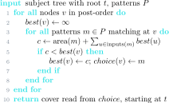
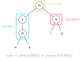

Method
- Subject graph: decompose every node into 2-input NANDs and inverters (a canonical but not unique base).
- Pattern graphs: each library gate (INV, NAND2, NAND3, AND2, AOI21, …) with its area, expressed as one or more NAND2/INV trees.
- Partition: split the subject DAG into trees at multi-fanout nodes.
- Cover each tree: every node must be the output of exactly one chosen match, whose inputs are outputs of other matches or leaves.
Dynamic programming on a tree: for each node  in post-order,
in post-order,
 nodes and pattern nodes.
nodes and pattern nodes.
Algorithm

Picture

Each candidate cover is a set of patterns tiling the tree; dynamic programming keeps the cheapest per node.
Intuition
Mapping is tiling a floor with the tiles the library sells, paying for each tile, and computing the cheapest tiling bottom-up.
Pitfall
Cutting the DAG into trees loses optimality at the cuts (patterns cannot span a multi-fanout point), and the result depends on the NAND2 decomposition chosen in step 1.